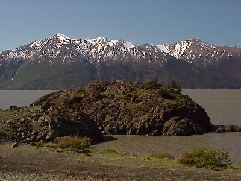
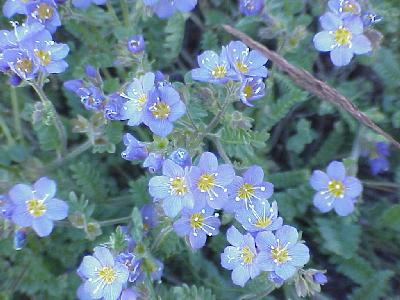
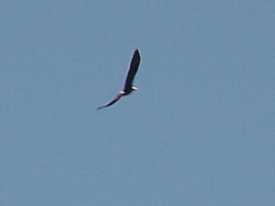
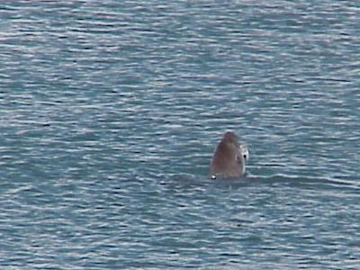
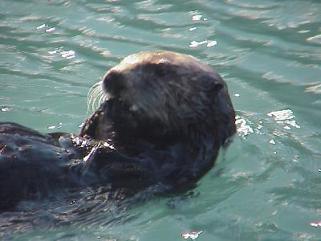

June 5, 5851 miles
| Off and traveling again. From Anchorage to Seward today, not many miles to go, but a lot of sight seeing opportunities. | |
| The Seward Highway is beautiful, things are starting to get much greener, at least at the lower elevations (there was still significant snow on the ground at higher elevations). |  |
| Even some of the wild flowers are starting to come out. |  |
| The mountains, hills, coast line, and all were gorgeous today. We managed to see a few bald eagles, although they are a little difficult to photograph, except while they are flying. |  |
| A little less elusive was this harbor seal in the Seward Harbor, but trying to see any more than a head was difficult. |  |
| The Sea Otter was much more cooperative, rolling, playing, and eating in close proximity to the docks in the harbor. A real neat sight. |  |
| We arrived in Seward about 4:00, after
traveling 162 miles, with plenty of time to go back out
and do some sight seeing, and eat dinner. Seward in a
nice little town of ~3000, but when the cruise ships and
tourists arrive I am sure its population is 3-4 times
that. Wildlife for the day included: moose (3); bald eagles (5); mountain goat (1); harbor seal (1); sea otter (1). Tomorrow we are off to cruise the fjords and look at glaciers and wildlife (maybe even a whale). |
|